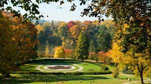
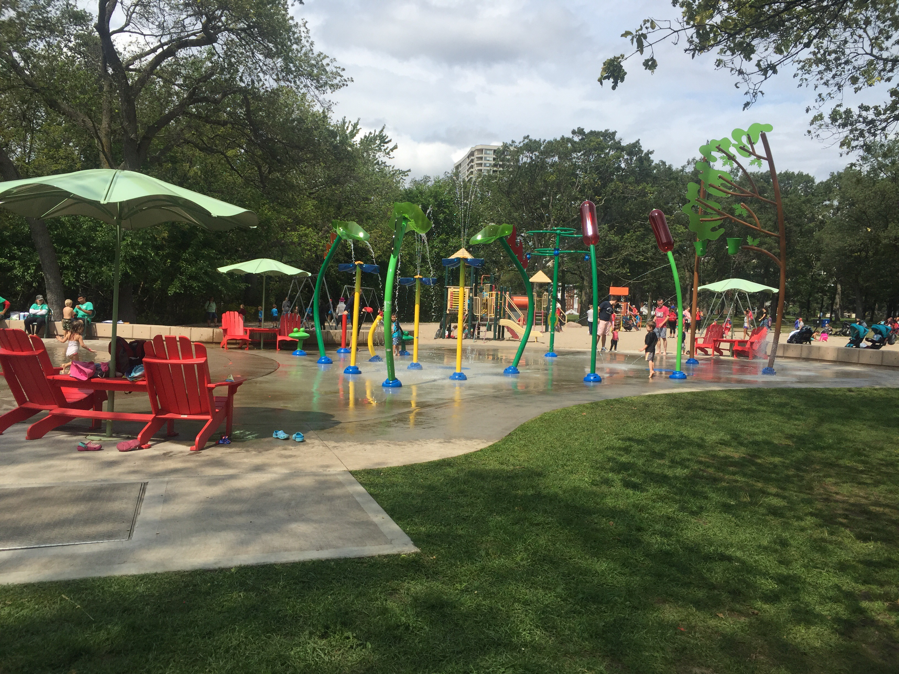

High Park
Back to Home
Toronto Island Park
CN Tower
Royal Ontario Museum
St. Lawrence Market
Eaton Centre
Fine Dine
Wine
Survey
About High Park
High Park is Toronto's largest public park featuring many hiking trails, sports facilities, diverse vegetation, a beautiful lakefront, convenient parking,
easy public transit access, a dog park, a zoo, playgrounds for children, greenhouses, picnic areas, and various events throughout the year.
High Park is recognized as one of the most significant natural sites within the City of Toronto because it is home to countless
species of wildlife, including insects, birds, amphibians and reptiles, fish and mammals

Activities to do in the park:
Fishing
allowed in a designated section of the Grenadier Pond shoreline (see map below)
No boats are permitted on the pond
Skating
An artificial ice rink is open from November to March
Located north of the outdoor pool along Colborne Lodge
Playing ball games
Three baseball diamonds
Two soccer fields
Six public tennis courts
Swimming and Water Play
One outdoor pool located along Colborne Lodge Drive at Allotment Lane

One wading pool located along West Road
Admiring the beautiful cherry blossoms
Best period : late April or early May
Most of the Sakura cherry trees are located around Hillside Gardens
Having picnic
High Park offers 18 designated picnic areas for pre-booking from May to September
No BBQs are allowed in the park
Attraction in High Park:
High Park Nature Centre
A non-profit organization supported by the City
Programs include nature walks, workshops and camps
Trackless Train
Runs daily
30-minute scenic ride weaves through the park
picking up other passengers along the way
Tickets can be purchased from the train operator
Ticket price is as follow:
Type
Price
Adult
$4.5
Children/Seniors
$3.5
Colborne Lodge
Built in 1837
is an active hub for community events in High Park, with cottage and garden tours, workshops
Free Guided 60-minute tours begin at Colborne Lodge and end near the Grenadier Café
Friend of High Park Zoo
Located on Deer Pen Road and is accessible via the Parkside Road entrance
Established in 1893
Free to the public
Animals in the zoo: Bison,Peacock,Reindeer etc
The map of High Park
Transportation
Transportation Type
Description
Car
High Park has four vehicle entrances and four main roads within the park:
Colborne Lodge Drive which runs through the park between Bloor Street and The Queensway
West Road which branches off Colborne Lodge Drive along the west side of the park
High Park Boulevard, the main entry point from Parkside Drive
Centre Road which connects Colborne Lodge Drive to High Park Boulevard
Bicycle
Bicycles are permitted on park roads including within vehicular lanes and bike lanes.
Walk
There are six natural trails that lead into High Park:
Ellis Park Road near Wendigo Pond
Bloor Street West, south of Parkview Gardens
Bloor Street West, south of Pacific Avenue
South-east corner of Bloor Street West and Parkside Drive
Parkside Drive at Howard Park Avenue
Basic Information